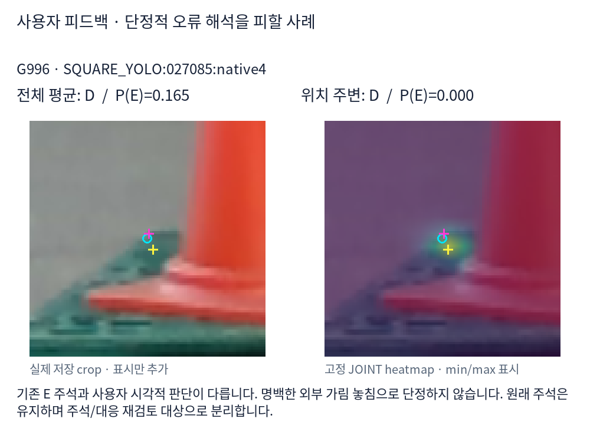
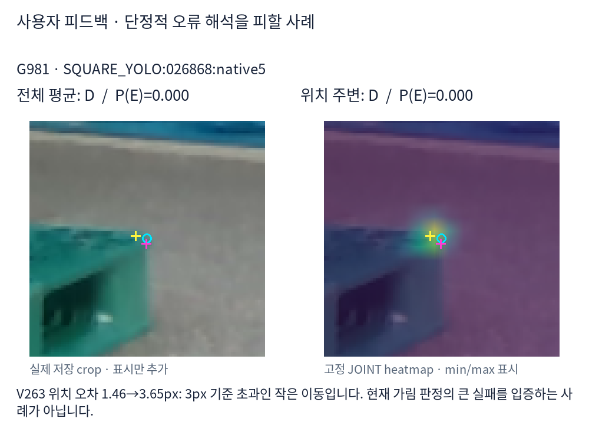
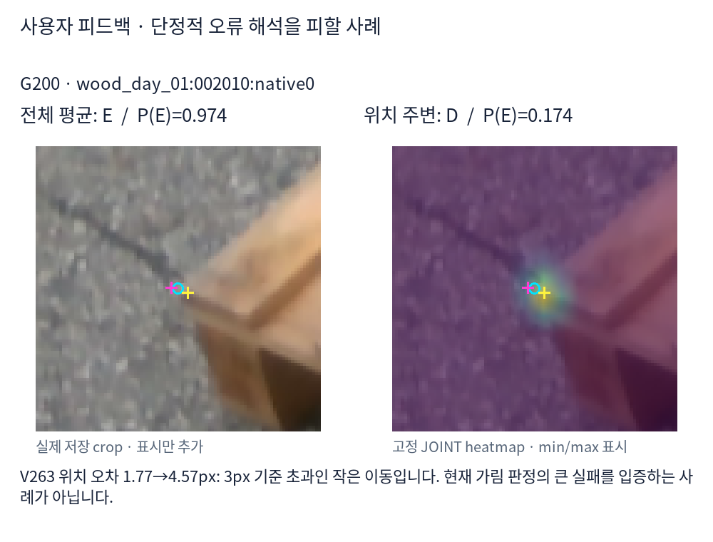

합성으로 학습한 두 새 분류기: GLOBAL_MATCHED는 crop 전체 특징 평균, HEATMAP_LOCAL은 고정 heatmap 위치 주변 특징을 이용합니다. 동일 클래스 균형 학습·고정 logit 0 기준입니다. 실사 223장은 평가에만 사용했습니다.
223장은 이전에도 확인한 개발 평가입니다. 새 두 방식의 비교가 이번 구조 차이의 대조군입니다. V263·v61·기존 모델과의 차이에는 학습 구조·표본 조건의 차이도 포함됩니다. 기존 모델의 과거 실사 학습 이력은 그대로입니다. 자기 가림은 외부 가림과 합치지 않습니다.
주석 D 1,147 / E 90. 혼동행렬 각 행의 열 순서는 D/E/U입니다. 비율은 %이며, recall 분모에 보류를 포함합니다.
| 모델 | D→D/E/U | E→D/E/U | D precision | D recall | E precision | E recall | E F1 | 보류율 |
|---|---|---|---|---|---|---|---|---|
| GLOBAL_MATCHED | 645/502/0 | 19/71/0 | 97.1 | 56.2 | 12.4 | 78.9 | 21.4 | 0.0 |
| HEATMAP_LOCAL | 1028/119/0 | 67/23/0 | 93.9 | 89.6 | 16.2 | 25.6 | 19.8 | 0.0 |
| v61 | 260/887/0 | 2/88/0 | 99.2 | 22.7 | 9.0 | 97.8 | 16.5 | 0.0 |
| CAL_LEGACY | 655/319/173 | 3/83/4 | 99.5 | 57.1 | 20.6 | 92.2 | 33.7 | 14.3 |
| V263_JOINT | 882/265/0 | 55/35/0 | 94.1 | 76.9 | 11.7 | 38.9 | 17.9 | 0.0 |
| V263_VIS | 1145/2/0 | 90/0/0 | 92.7 | 99.8 | 0.0 | 0.0 | 0.0 | 0.0 |
| V261_CONTROL | 964/183/0 | 22/68/0 | 97.8 | 84.0 | 27.1 | 75.6 | 39.9 | 0.0 |
| V261_TREAT | 959/188/0 | 22/68/0 | 97.8 | 83.6 | 26.6 | 75.6 | 39.3 | 0.0 |
새 두 방식의 짝 비교: 둘 다 일치 646, 위치 주변만 일치 405, 전체 평균만 일치 70, 둘 다 불일치 116점. 순변화 +335점.
재질·평가군별 전체 혼동행렬/precision/recall/F1/보류율 CSV · 자기 가림 별도 응답 · 짝 비교 전이 · 1,784점 행별 결과 · 전체 결과 JSON
재질 × 정답 D/E × 두 방식의 정오 조합에서 최소 원본 순번을 선택했습니다. RGB를 읽기 전에 사례 목록을 저장했습니다. 셀 전체 개수를 표시하며 빈 셀을 대체하지 않았습니다. 대표 이미지가 전체 빈도를 대신하지 않습니다.
파랑 ○ 초기 위치 / 노랑 + 고정 JOINT 위치 후보 / 분홍 + 기존 주석 좌표. 가림 점의 분홍 좌표는 직접 보이는 위치의 정답을 뜻하지 않습니다. Heatmap은 crop별 min/max 표시이며 밝기는 보임 확률이 아닙니다. P(E)는 별도 분류기 출력입니다.
전체 셀: 목재 8셀 · 정사각형 8셀 · 사례 선택/빈 셀 목록

기존 E 주석과 사용자 시각적 판단이 다릅니다. 명백한 외부 가림 놓침으로 단정하지 않습니다. 원래 주석은 유지하며 주석/대응 재검토 대상으로 분리합니다.

V263 위치 오차 1.46→3.65px: 3px 기준 초과인 작은 이동입니다. 현재 가림 판정의 큰 실패를 입증하는 사례가 아닙니다.

V263 위치 오차 1.77→4.57px: 3px 기준 초과인 작은 이동입니다. 현재 가림 판정의 큰 실패를 입증하는 사례가 아닙니다.
새 학습·threshold 검색·PnP는 이 평가 스크립트에 없습니다. 위치 출력은 V263에서 고정된 것을 표시합니다.